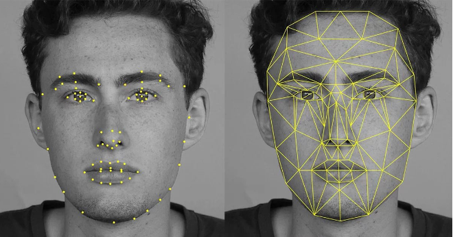

Computer Vision is a revolutionary field of AI that enables computers to make use of digital inputs, such as photo and video. Using this digital input, computers can use machine learning to make suggestions, and take actions based on that information. [2]
Computer Vision is used in many of the products you may use on the daily basis;
Apple Face ID:
Snapchat filters:

Computer Vision is a growing field of research, and it is actively being used by some of the most revolutionary companies on the planet. These include SpaceX, X Moonshot, and many more.